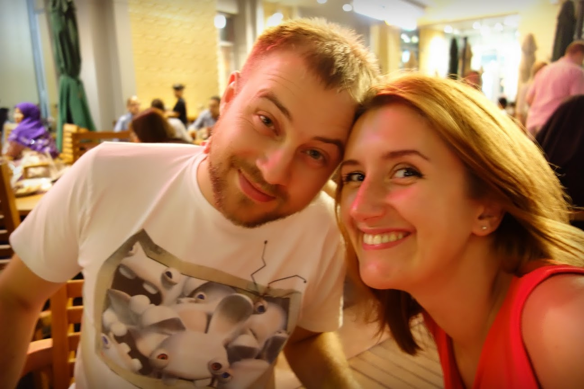

Liubomyr Malanchak
Opentext Streamserve Developer, Technical Consultant, Web UI Developer
Companies I worked with and learned from
-
Senior Streamserve Professional Services Consultant at N-ix (Opentext)
September 2012 – Present
Key Areas: Streamserve - SAP (IS-U) integration, XML, AFP/PCL/PDF, Streamserve, Tomcat, Net weaver, Oracle, MSSql, DB2.
-
Senior Streamserve Technical Support Engineer at N-ix (Opentext)
December 2010 – September 2012
Key Areas: XML, AFP/PCL/PDF, Streamserve, Tomcat, Net weaver, Oracle, MSSql, DB2
-
Technical Support Engineer at Parallels Ltd.
July 2008 – December 2010
Key Areas: Tomcat, IIS, HTTP, PHP, MySQL, PostgreSQL, MsSQL, Oracle, Parallels desktop, Virtuozzo containers, Plesk panel, Parallels billing and business automation solutions.
I am an IT professional with over 7 year of experience in the field
out of which about 5 years of hands-on experience in the Open Text & Streamserve products and around 2 years in Virtualization and business automation software. I am a quick learner with a combination of technical, analytical,
and communication skills. Due to the nature of my work I have developed broad-based knowledge of both Windows and UNIX flavored environments, programming languages like Streamserve Script, Shell, and SQL. Additionally I am well acquainted with all levels of technical customer support for software products and services. I am also proficient in English & Spanish languages.